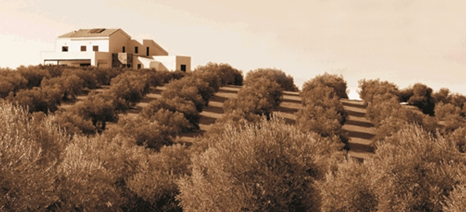
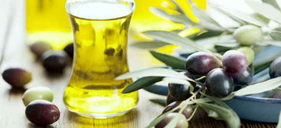

世界橄榄油产地国集中在西班牙、意大利、希腊、土耳其等地中海沿岸国家。而西班牙橄榄油的产量和出口量均居世界之首，年产油量约为160万吨，占世界总量的50%，故西班牙也被誉为“世界橄榄油王国”。
西班牙安达卢西亚地区以出产顶级橄榄油闻名于世，它每年出产的特级初榨橄榄油占到西班牙全国量的60%,出口占到80%，所以安达卢西亚在欧洲就是顶级初榨橄榄油的代名词，安达卢西亚橄榄油可以比其他产区的橄榄油价格高20%，却仍然供不应求。
产于安达卢西亚的卡马乔特级初榨橄榄油，富含单不饱和脂肪酸和丰富的微量元素，其单不饱和脂肪酸含量已达到了77％，且反式脂肪酸含量C18:1T≤0.05% C18:2T+C18:3T≤0.05%是人类公认的地中海膳食健康的精髓，更是一款品质极佳的高性价比产品。
特级初榨橄榄油保证其营养成分不被破坏，只萃取第一道原液精华，遵循古法采用纯物理压榨生产，加工采用橄榄鲜果在二十四小时内压榨出来的纯天然果汁经油水分离制成。生产过程中不允许使用化学物质和高温，而且在压榨过程结束后补能再加工或提炼，充分保留橄榄油独特的香味和营养。
橄榄油的好处：
1、降低胆固醇，防止心血管疾病的发生。
2、改善消化系统功能，有助于减少胃酸、提高胃、脾、肠、肝和胆管的功能。刺激胆汁分泌，预防胆结石，减少胆囊炎的发生。
3、温和轻泄，早晨空腹服用两汤勺对缓解慢性便秘具有意想不到的功效。
4、防止大脑衰老，预防早老性痴呆。有助于增强人体对矿物质的吸收，减少类风湿关节炎的发生。
5、能够对一些类型的恶性肿瘤，如前列腺癌、乳腺癌、肠癌、鳞状细胞和食道癌有抑制作用。
6、防止皮肤损伤和衰老，使皮肤具有光泽。
7、对于肥胖者来说，经常使用橄榄油比少吃脂肪更能控制体重。